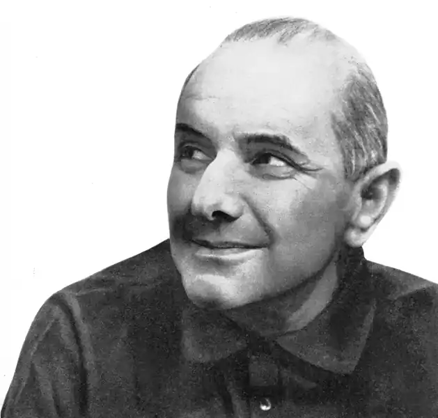
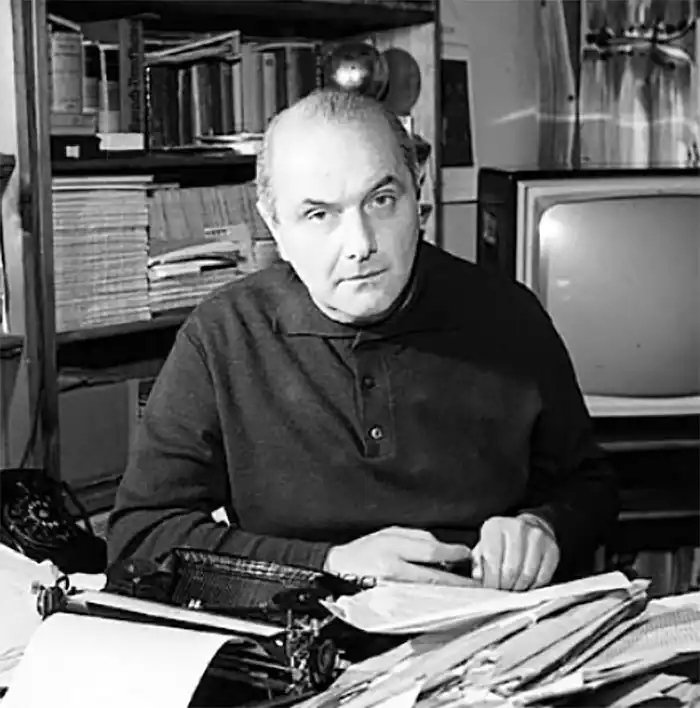
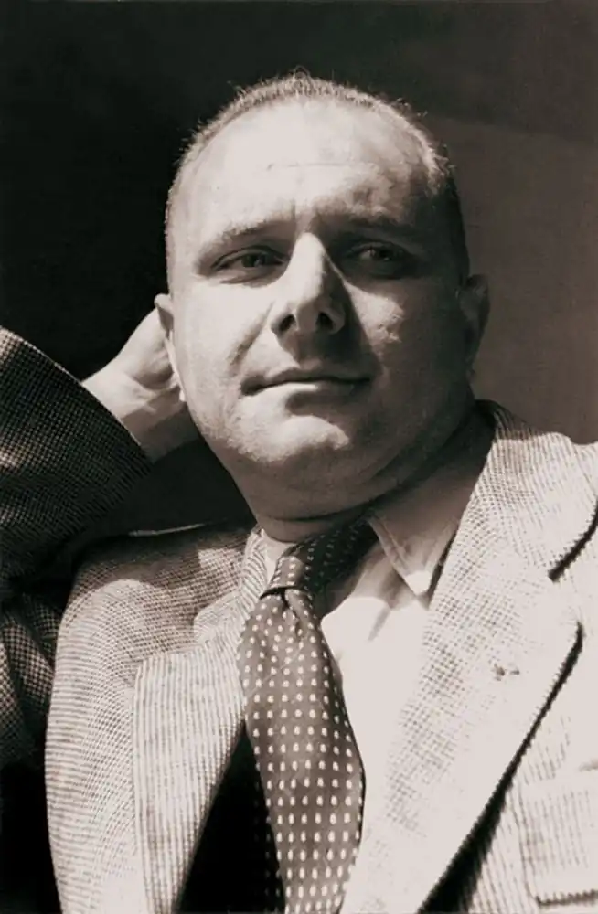

Поет, сатирик, афорист, автор фрашек. Народився 6 березня 1909 року у Львові, помер 7 травня 1966 року в Варшаві. Збірник афоризмів Леца "Незачесані думки", перекладений на багато мов, приніс автору міжнародну популярність.
Станіслав Єжи Лец народився у Львові в галицькій дворянській родині єврейського походження, його справжнє прізвище де Туш-Летцен. Письменник сам змінив її на "Лец", що на івриті означає "паяц, блазень", а також "той, хто, спостерігаючи з боку, сприймає і пояснює по-своєму".
Шкільна освіта Лец отримав у Відні і у Львові, а після закінчення школи вивчав полоністику, а пізніше юриспруденцію в Університеті Яна Казимира. У 1929 р він дебютував з віршем "Весна" в журналі "Kurier Literacko-Naukowy" (№13). У 1934 році Лец переїхав до Варшави, де співробітничав з комуністичною газетою "Dziennik Popularny", а також публікував свої твори в журналах "Cyrulik Warszawski", "Lewar" і "Szpilki". Після початку Другої світової війни він перебрався до Львова, де брав активну участь у літературному житті, публікував вірші, сатири, статті та переклади з російської в журналі "Czerwony Sztandar". Після вторгнення німців в 1941 році Лец був заарештований і потрапив в Яновський концентраційний табір у Львові, а потім в концтабір в Тернополі, звідки втік у 1943 році. Письменник співпрацював з підпіллям, брав участь у партизанському русі, воював в рядах Народної армії (Armia Ludowa). У липні 1944 року Лец вступив в 1-у армію Війська Польського у званні майора. З 1946 по 1950 рр. Станіслав Єжи Лец служив аташе з питань культури Польської політичної місії у Відні, після чого на два роки виїхав до Ізраїлю. З 1952 року жив у Варшаві. У п'ятдесяті роки крім ліричних і сатиричних творів, а також перекладів з німецької мови, він почав публікувати в газетах афоризми з циклу "Незачесані думки" ( "Myśli nieuczesane"). Нагороджений офіцерським хрестом Ордена Відродження Польщі (1966). Помер 7 травня 1966 року в Варшаві. Лец — майстер парадоксу, двозначною іронією, ємною метафори, словесних ігор, які змушують думка вийти за звичні рамки. Його твори, яким властива проникливість спостережень, лірична експресія і лаконічність, мають екзистенційним характером. Твори Станіслава Єжи Леца сягають корінням до афористичній традиції Стародавньої Греції та Стародавнього Риму, до висловів французьких мислителів (Шамфор, Ларошфуко), а також до єврейської літератури з її повними гумору і іносказань притчами. Як пише Лідія Коська (Lidia Kośka): "Творчість Станіслава Єжи Леца знаходиться між міфом творіння і досвідом Голокосту. (...) Воно відсилає нас до тієї особливої інтелектуальної формації, яку представляли Кафка, Шульц або Канетті і яка виникла на основі різноманіття європейської традиції на просторі Центральної і Східної Європи. Ця формація переживала занепад в роки Першої світової війни і остаточно перестала існувати під час Другої світової війни. (...) Лец залишився вірним культурному мови цієї формації, хоча, за його власними словами, це були вже "уламки цегли Вавилонської вежі" ".